Voici une sélection de théorèmes, souvent très connus, dont les démonstrations ne figurent pas toujours au concours... En cliquant sur l'intitulé de l'énoncé, vous ouvrirez une page où la véracité de celui-ci sera établie.
Soit un plan affine euclidien orienté et un cercle de ce plan de centre
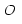
et de rayon dont
dont 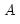
et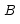
sont deux points distincts.Pour tout point
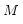
du plan autre que et on a :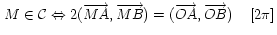
Théorème de d'Alembert-GaussTout polynôme non constant de
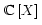
admet au moins une racine. Théorème de Bolzano-WeierstrassDe toute suite réelle bornée, on peut extraire une sous-suite convergente
Théorème de HeineToute fonction réelle continue sur un segment y est uniformément continue.
Théorème de PoincaréSoit
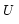
un ouvert étoilé de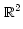
et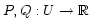
fonctions de classe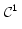
.Si
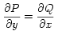
alors il existe une fonction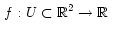
de classe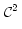
vérifiant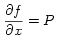
et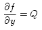
.De plus les solutions se déduisent les unes des autres par l'addition d'une constante. Théorème de Schwarz
Soit un ouvert de et
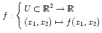
.Si
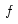
est de classe alors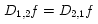
. Théorème de Cayley-HamiltonSoit
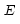
un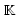
-espace vectoriel de dimension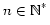
.Tout endomorphisme de annule son polynôme caractéristique.
MathPrépa • Mathématiques Sup & Spé (MPSI / MP) | Documents pédagogiques par David Delaunay | En ligne : mohammed-el-baraka.github.io/math-prepa